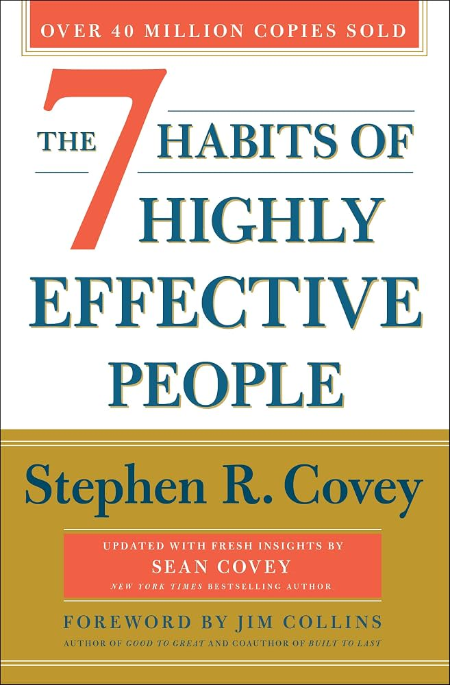

The 7 Habits of Highly Effective People opens with a diagnosis. Covey says that when he studied success literature, the older material centred on what he calls the Character Ethic (integrity, humility, courage, patience), while most modern material had shifted to a Personality Ethic built on techniques, image and quick fixes for influencing others. His claim is that personality-ethic advice can work briefly but fails under sustained testing, because it tries to change surface behaviour without changing the character producing it.
From that diagnosis he builds a sequence. The seven habits follow the Maturity Continuum: dependence (relying on others), independence (relying on yourself) and interdependence (combining effort with others). Habits 1 to 3 are the Private Victory, moving a person from dependence to independence. Habits 4 to 6 are the Public Victory, moving from independence to interdependence. Habit 7 renews the whole system so it does not wear down.
The method is "inside-out": real effectiveness starts with examining your own paradigms, the mental maps through which you read everything, rather than trying to change circumstances or other people first. Covey pairs the philosophy with repeatable tools (a Personal Mission Statement, the Emotional Bank Account, the Time Management Matrix, empathic listening).
Be proactive, begin with the end in mind, put first things first. Self-mastery.
Think win/win, seek first to understand, synergize. Working well with others.
Sharpen the saw: keep body, mind, heart and purpose in working order.
Short labels are my paraphrase of the three stages, not quotations.
The cover credits Jim Collins, author of Good to Great and co-author of Built to Last, with the foreword. I have not read it and could not find a reliable summary, so I am not describing its argument. Treat it as an endorsement of the book's staying power rather than part of Covey's method.
Covey describes the turning point behind the book: reading widely in success literature, he saw a divide around 1930. Earlier writing stressed the Character Ethic (integrity, humility, courage, patience). Later writing leaned on the Personality Ethic: techniques, skills and image for influencing others. He argues the second can produce short bursts of influence but collapses under real testing, especially in long relationships.
He introduces paradigms, the mental maps through which people interpret everything, and argues the biggest gains come from a paradigm shift rather than working harder inside the old map. The introduction closes by defining a habit as the overlap of knowledge, skill and desire.
"Inside-out" is both the book's method and a challenge to how most people approach change. The outside-in view assumes the problem is "out there" in other people or circumstances. The inside-out view says private victories must come before public ones: you cannot talk your way out of problems you behaved your way into.
Covey illustrates this with a personal story about a strained relationship with his son, where changing techniques achieved nothing until he examined his own view of the boy. The chapter also presents principles as objective, natural-law-like truths (fairness, honesty, integrity, human dignity) that operate whether or not people recognise them.
This chapter lays out the architecture. Covey defines effectiveness with the fable of the goose that laid golden eggs: sustainable results (Production) require maintaining the asset that produces them (Production Capability). Short-term thinking burns relationships, health or equipment for a quick gain, which breaks the P/PC Balance.
He then maps the habits onto the Maturity Continuum. Habits 1 to 3 form the Private Victory, 4 to 6 the Public Victory, and Habit 7 surrounds and renews the others.
Proactivity here means taking responsibility for your own responses, resting on the idea that between stimulus and response there is room to choose. Covey draws on Viktor Frankl's account of keeping the freedom to choose his attitude in a concentration camp as extreme evidence.
The chapter contrasts reactive language ("that's just the way I am") with proactive language ("I choose"), arguing our words reinforce our paradigm. It introduces the Circle of Concern (everything you care about) and the smaller Circle of Influence (what you can actually affect). Proactive people work inside the inner circle, which tends to expand; reactive people dwell on the outer one, which tends to shrink.
Everything is created twice, first as a mental blueprint and then in reality. Covey's central exercise asks you to imagine your own funeral and what you would want those closest to you to say, to clarify what matters rather than drifting on scripts absorbed from family, culture or circumstance.
The main tool is the Personal Mission Statement: a written statement of the principles and roles you choose to live by, working as a personal constitution against which daily decisions can be tested.
Habit 3 is the day-to-day execution of Habit 2. Its tool is the Time Management Matrix, sorting activity by urgency and importance into four quadrants: I (urgent and important), II (important, not urgent), III (urgent, not important) and IV (neither).
Covey's argument is that effective people spend as much time as possible in Quadrant II (planning, prevention, relationships, renewal), because that prevents future Quadrant I crises, yet Quadrant II has no built-in urgency and must be protected by deliberate weekly planning organised around roles and a few important goals per role.
This transitional chapter frames public victory around the Emotional Bank Account, a metaphor for trust. Deposits (courtesy, honesty, kept commitments, clarified expectations, small kindnesses, sincere apologies) build reserve. Withdrawals (discourtesy, broken promises, disrespect) draw it down. With a high balance, mistakes are forgiven and communication is easy; with a low one, even well-meant words are misread.
Covey stresses that interdependence builds on independence of character. Attempting Habits 4 to 6 as pure technique produces manipulation rather than cooperation.
Covey lays out six paradigms of interaction (win/win, win/lose, lose/win, lose/lose, win, and win/win or no deal). Win/lose and lose/win are the defaults most people are conditioned into, while win/win is the only one sustainable in relationships you will keep depending on. He separates true win/win from compromise, which merely splits the difference.
Win/win or no deal, a willingness to walk away if no mutual solution exists, keeps the idea honest. An abundance mentality is presented as the psychological prerequisite, against a scarcity mentality in which anyone else's gain feels like your loss.
Covey argues most people listen with the intent to reply, filtering what they hear through their own experience by evaluating, probing, advising or interpreting. Empathic listening is the alternative: listening to understand another person's frame of reference and feelings, which is not the same as agreeing.
Only once people feel understood are they ready to consider your view. The "then to be understood" half is about presenting your case clearly, using the classical sequence of credibility, empathy and logic, in that order.
Synergy is the whole becoming more than the sum of its parts. Covey positions it as the payoff of practising Habits 1 to 5: valuing differences, not merely tolerating them, creates raw material for solutions neither person could design alone.
He contrasts synergistic communication, open to a "third alternative", with compromise (both settle for less) and defensive communication (exploration shuts down). The greater the real difference in perspective, the greater the potential, provided the people involved have enough trust and skill to explore it safely.
The final habit surrounds the others and renews four dimensions of human nature: physical (exercise, nutrition, stress), spiritual (values, reflection), mental (reading, planning, writing) and social/emotional (service, empathy, security rooted in principles rather than approval).
Covey frames it with the woodcutter too busy sawing to sharpen the saw. Without deliberate renewal, effectiveness erodes even for someone who has mastered Habits 1 to 6, because they all run on the same finite capacity. Renewal is Quadrant II by nature, never urgent and always important.
The closing chapter returns to the founding claim and applies it to families and organisations: the same principles that change an individual can change a marriage, a family or a company culture, provided someone is willing to be an example rather than wait for the system to change.
Covey closes with the idea of a "transition person", someone who deliberately stops an unhealthy pattern being passed to the next generation rather than handing it on.
As I understand it, this appendix extends Habit 2's discussion of life-centres. It compares how what a person puts at the centre of life (for example spouse, money, work, pleasure, friends or principles) can colour their view of security, guidance and decisions, with the principle-centred life presented as the steadier option. I have not seen the appendix's text; this is inferred from its title and the book's themes.
Judging by its title and Habit 3, this is a worked example of weekly planning applied to an ordinary working day, showing how Quadrant II time is protected. I have not seen the text, so I am not describing its details.
The contents listing ends with a Problem/Opportunity Index, which lets a reader look up the book by situation rather than by habit, followed by a standard index. Useful for returning to the book for a specific need; there is nothing to summarise.
The seven habits are the heart of the book, grouped into Private Victory, Public Victory and Renewal. Each habit below gets the same treatment: what it asks of you, what it looks like in practice, and the common way it goes wrong. The sample sentences and scenarios are my own illustrations in the spirit of the book, not quotations from it.
The private victory is about becoming someone who can reliably keep promises to themselves. Covey's claim is that you cannot build good relationships on a character you cannot trust, so the work starts internally: how you respond (Habit 1), where you are heading (Habit 2) and whether your calendar matches (Habit 3).
Once you can manage yourself, the book turns to working with others. The Emotional Bank Account sets the stage (trust as a balance), then three habits cover agreements (win/win), communication (understand first) and creative problem solving (synergy).
Habit 7 treats you as the asset behind all the other habits (the goose, not the eggs). It names four dimensions to renew regularly, and warns that neglecting any one eventually drags the others down.
| Habit | Group | Core move | Main tool | Typical failure |
|---|---|---|---|---|
| 1. Be Proactive | Private | Choose your response | Circle of Influence | Blame and worry |
| 2. Begin with the End in Mind | Private | Define what matters | Personal mission statement | Drifting on others' scripts |
| 3. Put First Things First | Private | Act on what matters | Four-quadrant matrix | Living in crises |
| 4. Think Win/Win | Public | Seek mutual benefit | Win/win agreements | Win/lose habits |
| 5. Seek First to Understand | Public | Listen before advising | Empathic listening | Listening to reply |
| 6. Synergize | Public | Create a third option | Valuing differences | Settling for compromise |
| 7. Sharpen the Saw | Renewal | Maintain yourself | Four dimensions | Burning out |
Two points to hold onto. First, the habits build on each other, so an honest low score on one usually shows up as trouble in the next. Second, none of them is a technique on its own: the book's claim is that each is only as good as the character behind it.
A self-reflection sketch of my own, not a test from the book. Slide each to how true it is for you on a typical week.
Seven statements, all invented by me. Tap the habit each one is mainly about.
The book's main practical tools in one place, described from my reading of its structure. The practice plan at the bottom is my own suggestion.
Proactive people focus inside the inner circle, which tends to expand it. Reactive people focus on the outer circle, which tends to shrink it.
Illustrative phrasings in the spirit of the book's contrast, not direct quotations.
Effective people spend as much time as possible in Quadrant II. It has no built-in urgency, so protecting it takes deliberate weekly planning.
Trust works like a balance. Deposits build a reserve; withdrawals draw it down.
A written statement of the principles and roles you choose to live by, used as a personal constitution to test decisions.
Of six interaction paradigms, only win/win holds up in ongoing relationships. The willingness to walk away keeps it honest.
Listen to understand another person's frame of reference and feelings, not simply to reply. It is the prerequisite for being heard yourself.
Real differences, explored with trust and skill, can produce a solution better than either starting position, which is different from compromise.
Be proactive.
Begin with the end in mind.
Put first things first.
Think win/win.
Seek first to understand, then to be understood.
Synergize.
Sharpen the saw.
Character Ethic vs Personality Ethic.
Circle of Influence.
Emotional Bank Account.
Quadrant II.
Third alternative.
Paraphrases, not direct quotes.
You cannot build good relationships on a character you cannot rely on.
Most people listen in order to answer, not to understand.
Whatever you never schedule rarely gets done.
Squeezing results out of the thing that produces them eventually stops the results.
| Category | Claude | Dan | Why Claude scored it that way |
|---|---|---|---|
| Ideas | 4.0 | 4.0 | The character-before-technique framing and the private-then-public sequence are coherent and influential, though the sequencing claim is asserted more than demonstrated. |
| Readability | 3.5 | 3.0 | Well structured and signposted, but long, with ideas restated and anecdotes that run on. |
| Actionability | 4.0 | 3.5 | The four-quadrant matrix, the bank account and listening-first can be used the same day; the mission statement is less concrete. |
| Evidence | 2.5 | 3.0 | Rests mainly on Covey's reading of success literature, personal stories and counselling anecdotes, not controlled research. |
| Category average | 3.5 | 3.38 | Claude's overall 3.5 is 0.66 below the Goodreads 4.16, which is more than 0.5, so see the note below. Dan's overall of 4.0 sits 0.62 above his own category average of 3.38. He matches Claude on Ideas (4.0), scores Readability and Actionability lower (3.0 vs 3.5, and 3.5 vs 4.0) and Evidence higher (3.0 vs 2.5). |
Categories are the same four used for every review: Ideas, Readability, Actionability, Evidence.
Why Claude sits below the crowd: Goodreads ratings reward a book's usefulness and reputation, and this one has both after decades and a huge readership. I weigh evidence and repetition more heavily as a reader would: the claims are largely asserted through stories rather than tested, and the central ideas can be taken in from a summary. I would not argue with readers who rate it higher for the tools alone.
Goodreads (The 7 Habits of Highly Effective People, the main edition page, all editions combined): 849,206 ratings, about 17,365 reviews. Star split: 5★ 47% (402,628), 4★ 30% (257,520), 3★ 15% (131,360), 2★ 4% (36,766), 1★ 2% (20,932). Checked 11 Nov 2026; rating count confirms the right book.
What you may have missed: Lynch finds the terms "character ethic" and "personality ethic" confusing, since they sound alike, and says the book's framing can read as though people who have not succeeded simply lack better habits, which sits awkwardly with real-world constraints. Caldwell also notes that other habits could arguably have made the list.
My own addition, as judgment rather than a sourced finding: the book's sweeping history of "success literature" is not presented like a research study, so the shift it describes around 1930 is Covey's interpretation. I have not checked it independently.
Dan rates The 7 Habits of Highly Effective People 4 out of 5, with a caveat: it has been a very long time since he read it and he doesn't remember much. The habit that has definitely stayed with him is beginning with the end in mind. When he read it, he thought it had really good ideas (4).
He remembers it taking him longer than most books to get through (readability 3). He doesn't recall much actionability, but remembers a workbook that is around the house somewhere, so he guesses it is quite actionable (3.5). He sees it as more of a person's opinion than something backed by scientific evidence (3).
Now that he is in an organisational and operations role, he thinks rereading it would help him see what landed and what didn't, and how well it has aged.
Written up from Dan's own words (11 Nov 2026). These scores come from memory of a read long ago, so treat them as provisional. His view stands apart from the Claude and reader views above.
Effectiveness with other people and outcomes is rarely won by working on those things directly first. It starts with your own character and the way you see things. The inside-out idea makes the bank account and Circle of Influence durable, because both turn attention back to what you control. The sequence is what stops it being a platitude: do the private work before reaching for communication or negotiation techniques.
The 7 Habits of Highly Effective People remains a popular and influential self-help book because it offers a sequenced framework and a handful of tools that people still use. Its weaknesses are length, repetition and a thin evidence base, and the habit names have become corporate shorthand.
Read it for the architecture, keep the four quadrants and the bank account close, and treat the claims as a thoughtful framework to try rather than proven science.